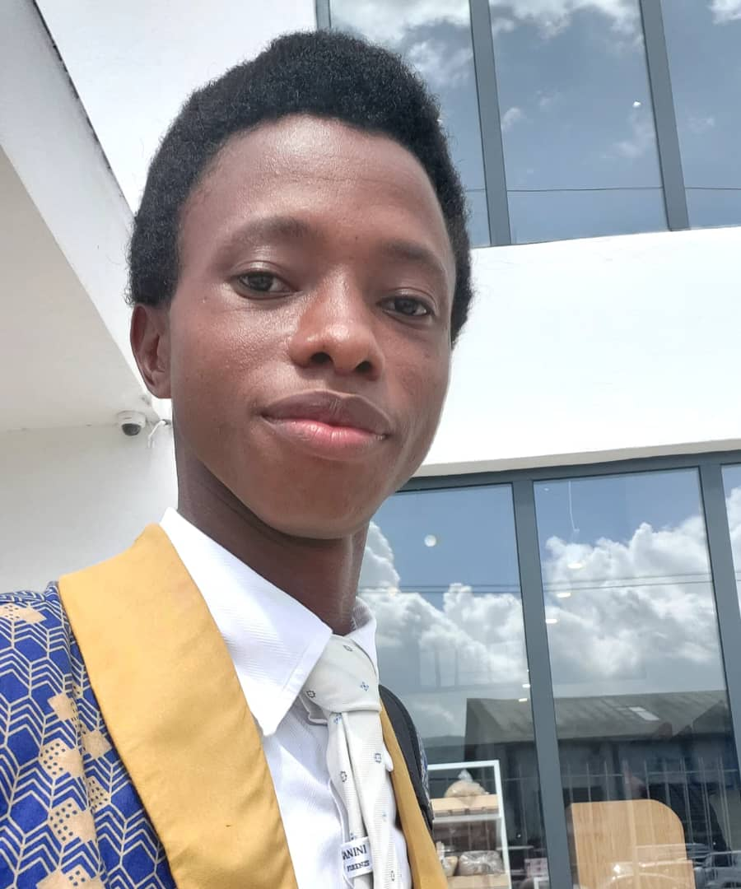

Bundu Kallon | WDD 330
Hello! My name is Bundu Kallon and I'm from Your Freetown, Sierra Leone, west Africa. I enjoy Coding at BYU Pathway. I'm excited to learn web development in this course. I am an aspiring full-stack developer from Sierra Leone. I'm passionate about creating solutions through code and currently deepening my skills in HTML, CSS, and JavaScript. When I'm not coding, you can find me contributing to open-source projects or exploring new technologies. My goal is to build applications that solve real problems in my community while meeting global standards I believe in the power of technology to transform lives, and I'm excited to be part of this journey through the WDD 330 course. Let's connect and build something amazing together!